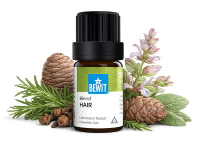

Krásné vlasy začínají u zdravé pokožky hlavy. Esence se postarají o výživu od kořínků — jemně, přirozeně a bez zbytečné chemie. Vaše vlasy to poznají. Výsledky přicházejí s pravidelností — dopřejte si čas.

pro přirozenou krásu a sílu
Vypadávání vlasů nebo ztráta lesku. Ukáži vám, jak přirozeně posílit vlasové kořínky a podpořit růst bez chemie.

Speciální směs esenciálních olejů přímo vytvořená pro péči o vlasy — podporuje růst, posiluje kořínky a dodává vlasům přirozený lesk a sílu.
💧 Jak použít: přidej 2–3 kapky do šamponu. Na vlasový zábal smíchej s nosným olejem (např. jojoba), nanes na délky a nech působit 20–30 minut. Na péči o konečky smíchej kapku s nosným olejem a nanes na suché špičky.
Zjistit více →💧 Jak použít: přidej kapku do šamponu nebo vmaž zředěný v nosném oleji do pokožky hlavy před mytím.
Chci růst vlasů💧 Jak použít: přidej do šamponu nebo smíchej s olejem na zábal — nech působit 20 minut a poté umyj.
Chci silné vlasy💧 Jak použít: vmíchej kapku do kondicionéru nebo nanes zředěný v nosném oleji na konečky vlasů jako sérum.
Chci lesklé vlasyA k tomu skvěle sedí
💧 Jak použít: 1–2 pumpičky vmasírujte do vlhkých vlasů a vysušte. Pro intenzivní péči naneste i na suché konečky nebo použijte jako zábal na 20–30 minut.
Chci hebké vlasy💧 Jak použít: naneste na pokožku hlavy, jemně vmasírujte a nechte působit.
Chci silné kořínky💧 Jak použít: 3× denně 1–2 malé (espresso) lžičky.
Chci krásné vlasyKrásné vlasy začínají u zdravé pokožky hlavy. Esence se postarají o výživu od kořínků — jemně, přirozeně a bez zbytečné chemie. Vaše vlasy to poznají. Výsledky přicházejí s pravidelností — dopřejte si čas.
🌿 Všechny esence, které na tomto webu doporučuji, jsou od BEWIT. Jako registrovaný zákazník můžete nakupovat se slevou až 50 % na vybrané produkty.
Registrace u BEWIT zdarma →